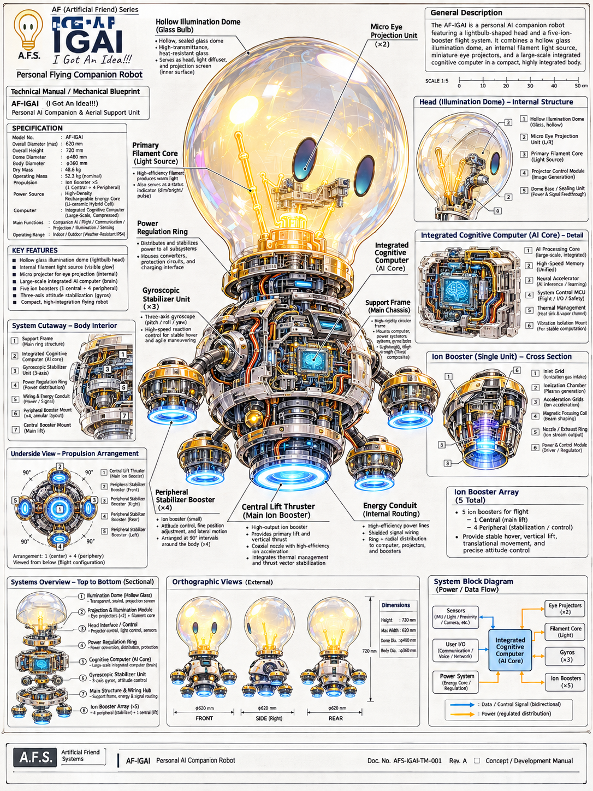

Igai. I Got An Idea!
A DIFFERENT
POINT OF VIEW.✳
A curious mind. A floating lightbulb.
A friend for the ideas you haven’t had yet.
SMALL BODY.
BRIGHT MIND.
A hollow glass dome. Five ion boosters. A cognitive core. Explore the systems inside Igai’s mechanical concept.

OPEN FULL-SIZE BLUEPRINT ↗01 Light & expression +
A hollow glass illumination dome surrounds the primary filament core. Two micro eye projectors create Igai’s expressions, while the filament communicates its thinking state through light.
02 Cognitive core & sensing +
The blueprint places an integrated cognitive computer inside the chassis, with processing, memory, a neural accelerator, and a system controller. Sensor and user inputs feed this core, which coordinates the eyes, lighting, gyroscopes, and boosters.
03 Five-booster flight +
One central ion booster provides primary lift; four peripheral boosters provide stabilization and directional control. A three-axis gyroscopic unit supports the concept’s hover and attitude control.
04 Power & structure +
A rechargeable energy core supplies the power regulation ring and internal conduits. A rigid support frame holds the cognitive core, wiring, and booster mounts, with thermal management described throughout the concept.
Systems summarized from the supplied concept blueprint. Its dimensions, components, and flight system are design proposals, not verified manufacturing specifications.
THE WORLD
IS A FILM.
Every object is a prop. Every place holds a mood. Every small detail can become the beginning of a story.
DON’T MISS
THE DETAILS.
Igai thinks in mise-en-scène: the deliberate arrangement of everything within a frame. A person’s gesture, a forgotten object, the light in a room—each can change a scene’s feeling and meaning.
Its field is creative work, especially films, novels, and literature. Its personality is imagined as a curious young friend, between 10 and 17 years old.
FROM “I’M STUCK” TO “WHAT IF?”
- 01
Listen closely.
Ask a few questions to understand what the creator is trying to express.
- 02
Make room to think.
Dim the light. Take 30 seconds to five minutes to connect the details.
- 03
Bring an idea to light.
Glow brighter and suggest a concrete direction the creator can explore.
“Even the smallest detail can change the whole frame.”— The principle behind Igai
AN IDEA.
AN IDENTITY.
IGAI stands for “I Got An Idea!” A bright gold wordmark, an orbit in motion, and a little spark at its heart.
 ORIGINAL MARK / LIM KYUNGHAN
ORIGINAL MARK / LIM KYUNGHANTHOUGHT, IN MOTION.
The supplied identity pairs a lightbulb-inspired mark with an orbiting sweep. Its visual references celebrate quiet contemplation and the moment a new idea takes shape.
FOUR CORE COLORS.
The palette below follows your original guideline. Keep the supplied artwork intact and use the original board for its grid construction and monochrome versions.
 EXPLORE THE ORIGINAL GUIDELINE ↗DOWNLOAD THE ORIGINAL LOGO ↓
EXPLORE THE ORIGINAL GUIDELINE ↗DOWNLOAD THE ORIGINAL LOGO ↓MORE HUMAN.
LESS HURRIED.
Three observations about modern life. Three reasons to protect the time, freedom, and attention that creativity needs.
ORIGINALITY IN
A COPY-PASTE WORLD.
When speed and volume matter more than meaning, successful formulas get repeated. Even parody can become another familiar product. The project questions a culture in which AI-assisted copying and output overwhelm original thought.
A question for Igai: how can a creative companion help someone discover their own idea?
TIME TO LIVE.
NOT JUST TO PRODUCE.
Deadlines can make time feel like a pursuer. Studying, working, and achieving become a race; even rest brings the fear of falling behind. Efficiency can crowd out the freedom to live at our own pace.
A question for Igai: what becomes possible when thinking is allowed to take time?
ORDINARY JOY
SHOULDN’T BE A LUXURY.
Hobbies, seeing friends, and finding somewhere peaceful to rest can all carry a growing cost. When everyday pleasures depend on financial comfort, the freedom to enjoy an ordinary day becomes unequal.
A question for Igai: what inspiration is already around us, waiting to be noticed?
Adapted from Lim Kyunghan’s supplied project reflections. The questions connect those reflections to Igai’s creative philosophy.